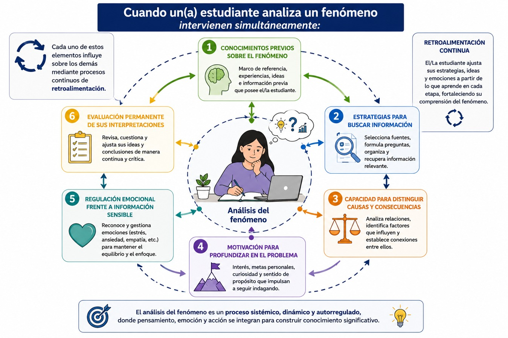
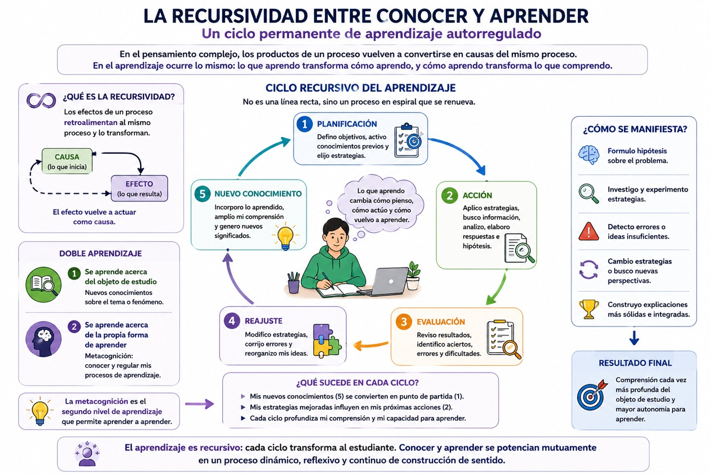
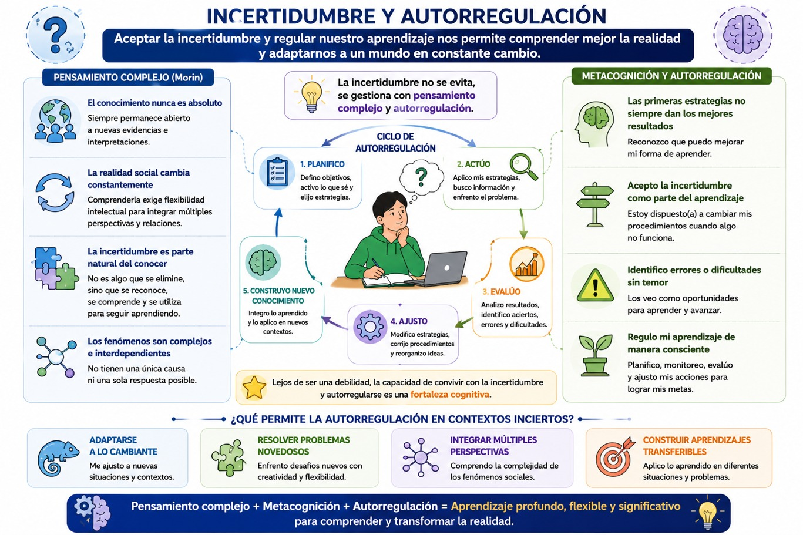
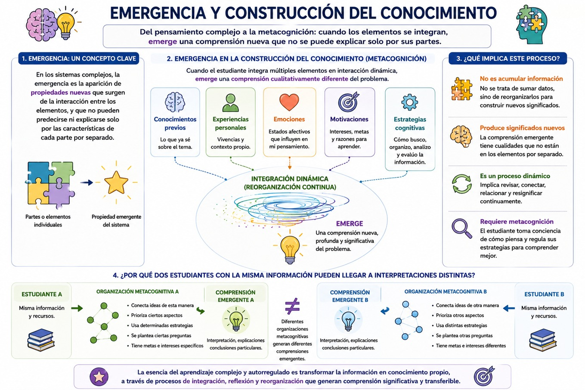
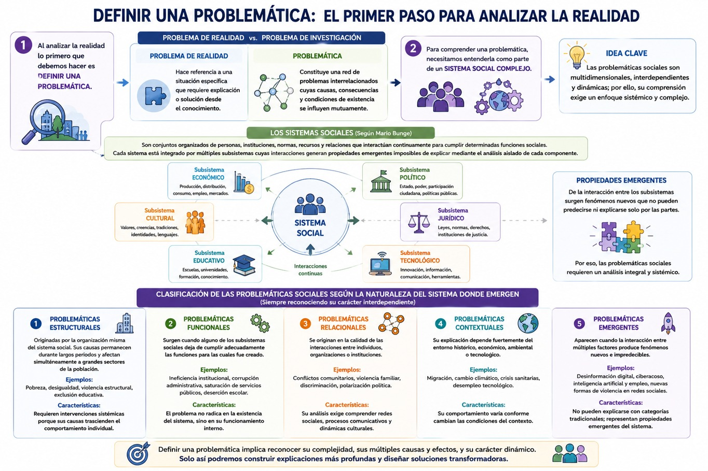
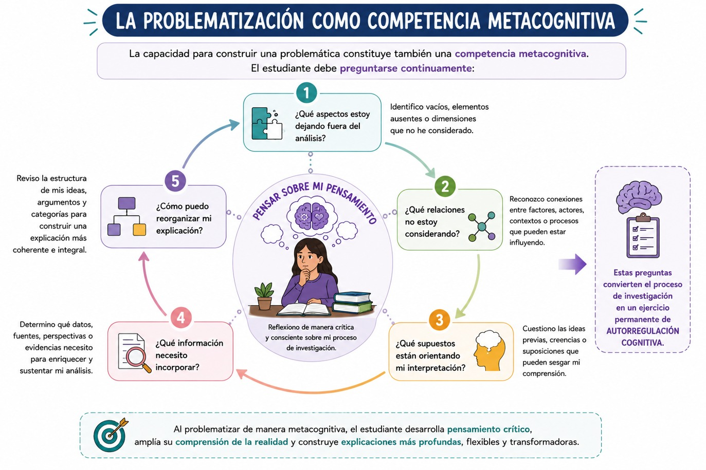

Aunque el pensamiento complejo y la metacognición surgieron en campos distintos del conocimiento, ambos comparten un propósito común: superar las explicaciones lineales y promover una comprensión más profunda tanto de la realidad como de los propios procesos de pensamiento. Mientras el pensamiento complejo propone nuevas formas de analizar los fenómenos sociales caracterizados por la incertidumbre, la interacción y la emergencia, la metacognición permite tomar conciencia de cómo construir ese conocimiento y regular deliberadamente el aprendizaje.
Desde esta perspectiva, aprender deja de consistir únicamente en adquirir información para convertirse en un proceso permanente de reflexión sobre la manera en que se interpreta el mundo. De esta manera, sabemos que no solamente debemos analizar una problemática social, sino que simultáneamente, debemos examinar las estrategias cognitivas que utilizamos para comprenderla, las emociones que influyen en el razonamiento y las decisiones que tomamos durante la resolución de problemas. De esta forma, pensamiento complejo y metacognición convergen en una misma finalidad: desarrollar una inteligencia capaz de reflexionar sobre sí misma.
Como hemos visto a lo largo de esta UCA, tradicionalmente, gran parte de la educación occidental estuvo influida por el paradigma cartesiano, caracterizado por la fragmentación del conocimiento, el análisis aislado de las partes y la búsqueda de relaciones causales simples. Bajo este modelo, los problemas sociales podían dividirse en elementos independientes para estudiarlos por separado. Sin embargo, la realidad contemporánea ha demostrado que numerosos fenómenos —como la pobreza, la violencia, la migración, el cambio climático o la desigualdad— no pueden comprenderse mediante explicaciones lineales. Estos problemas emergen de la interacción permanente entre factores económicos, políticos, culturales, ambientales, tecnológicos y psicológicos que se influyen mutuamente.
Como vimos en el bloque 1, Edgar Morin denomina pensamiento complejo a esta nueva forma de comprender la realidad, caracterizada por reconocer la incertidumbre, las múltiples causalidades, la organización sistémica y las relaciones recursivas entre los fenómenos. Desde esta perspectiva, conocer significa establecer conexiones antes que aislar elementos, identificar relaciones antes que acumular información y comprender procesos antes que memorizar hechos. La metacognición comparte esta misma lógica. Cuando tú, como estudiante, reflexionas sobre tus estrategias cognitivas, reconoces que el aprendizaje tampoco ocurre de manera lineal. Ahora sabemos que, comprender un concepto implica revisar conocimientos previos, modificar interpretaciones, controlar errores, integrar nueva información y evaluar continuamente los resultados obtenidos. Así, el aprendizaje se convierte entonces en un sistema dinámico de retroalimentación permanente.
Las investigaciones más recientes muestran que la metacognición no puede entenderse de forma aislada, sino integrada con la motivación y la cognición dentro del aprendizaje autorregulado. En ese sentido, la autorregulación constituye un constructo más amplio que incorpora simultáneamente conocimiento metacognitivo, regulación cognitiva y procesos motivacionales, configurando un sistema dinámico de interacción entre estos componentes. (Zulma, 2006). Precisamente esta integración constituye uno de los principales puntos de encuentro con el pensamiento complejo. Ambos enfoques rechazan las explicaciones reduccionistas y consideran que los procesos cognitivos emergen de múltiples interacciones.
Por ejemplo, cuando una o un estudiante analiza la violencia estructural en una comunidad, intervienen simultáneamente:
- • conocimientos previos sobre el fenómeno;
- • estrategias para buscar información;
- • capacidad para distinguir causas y consecuencias;
- • motivación para profundizar en el problema;
- • regulación emocional frente a información sensible;
- • evaluación permanente de sus interpretaciones.
Cada uno de estos elementos influye sobre los demás mediante procesos continuos de retroalimentación. Observa el siguiente diagrama:

La recursividad entre conocer y aprender
Uno de los principios fundamentales del pensamiento complejo propuesto por Morin es el principio de recursividad. Este establece que los productos de un proceso vuelven a convertirse en causas del mismo proceso. En el aprendizaje ocurre exactamente el mismo fenómeno. Conforme el estudiante adquiere nuevos conocimientos, también modifica las estrategias con las cuales aprende. A su vez, estas nuevas estrategias transforman la manera de interpretar futuros problemas.
Existe entonces un doble aprendizaje:
- • se aprende acerca del objeto de estudio;
- • se aprende acerca de la propia forma de aprender.
La metacognición constituye precisamente ese segundo nivel de aprendizaje.
Desde esta perspectiva, el conocimiento no avanza en línea recta, sino mediante ciclos permanentes de planificación, acción, evaluación y reajuste. Esto permite que formules hipótesis o ideas acerca del fenómeno, identifiques errores, modifiques estrategias y reconstruyas continuamente tu comprensión de la realidad. Podrás entender visualmente la recursividad con el siguiente gráfico:

Incertidumbre y autorregulación
Otro punto de encuentro entre ambos enfoques es el reconocimiento de la incertidumbre. Para Morin, el conocimiento nunca es absoluto; siempre permanece abierto a nuevas evidencias e interpretaciones. La realidad social cambia constantemente, por lo que comprenderla exige flexibilidad intelectual. De manera semejante, la metacognición implica reconocer que las primeras estrategias de aprendizaje no siempre producen los mejores resultados. En este sentido, tú como estudiante con autorregulación aceptas la incertidumbre como parte natural del aprendizaje y estás dispuesta o dispuesto a modificar tus procedimientos cuando identificas errores o dificultades. Lejos de representar una debilidad, esta capacidad constituye una fortaleza cognitiva. La autorregulación permite adaptarse a contextos cambiantes, resolver problemas novedosos y construir aprendizajes transferibles a diferentes situaciones.
Puedes ver su ciclo en el siguiente diagrama:

Emergencia y construcción del conocimiento
El pensamiento complejo introduce además el concepto de emergencia, entendido como la aparición de propiedades nuevas que no pueden explicarse únicamente a partir de las características individuales de los elementos que integran un sistema. La metacognición presenta un fenómeno semejante. Cuando la o el estudiante integra conocimientos previos, experiencias personales, emociones, motivaciones y estrategias cognitivas, emerge una comprensión cualitativamente diferente del problema estudiado. No se trata simplemente de acumular información, sino de reorganizarla continuamente para construir nuevos significados.
Esta capacidad explica por qué dos estudiantes pueden disponer exactamente de la misma información y, sin embargo, producir interpretaciones completamente distintas. Lo que cambia no es solamente el conocimiento disponible, sino la organización metacognitiva mediante la cual dicho conocimiento es procesado. Lo puedes ver en el siguiente esquema:

Definición de una problemática según la clasificación de los sistemas sociales complejos
El análisis de los fenómenos sociales complejos constituye uno de los mayores desafíos para nosotras y nosotros como estudiantes universitarios, problemas como la desigualdad social, la violencia, el cambio climático, la migración, la exclusión educativa o las transformaciones derivadas de la digitalización no pueden comprenderse mediante explicaciones lineales o unidimensionales, ya que emergen de la interacción permanente entre factores económicos, políticos, culturales, tecnológicos, ambientales y psicológicos. Frente a esta realidad, como hemos revisado, el pensamiento complejo propone abandonar las explicaciones reduccionistas y adoptar una visión sistémica capaz de reconocer la incertidumbre, la interdependencia y la emergencia de nuevas propiedades sociales. Sin embargo, comprender esta complejidad no depende únicamente del dominio de conocimientos disciplinares; requiere también que tú, como estudiante desarrolles habilidades metacognitivas que te permitan reflexionar críticamente sobre la manera en que construyes tus propias interpretaciones. En este sentido, la metacognición y el pensamiento complejo convergen en un objetivo común: que te formes como una persona capaz de aprender de manera consciente mientras analizas una realidad caracterizada por la incertidumbre.
Para analizar la realidad lo primero que debemos hacer es definir una problemática. Ya hemos visto anteriormente que un problema de realidad es distinto de un problema de investigación. En ese sentido un problema hace referencia a una situación específica que requiere explicación o solución desde el conocimiento. Una problemática, en cambio, constituye una red de problemas interrelacionados cuyas causas, consecuencias y condiciones de existencia se influyen mutuamente. Ahora bien, recordemos que Mario Bunge define los sistemas sociales como conjuntos organizados de personas, instituciones, normas, recursos y relaciones que interactúan continuamente para cumplir determinadas funciones sociales. Cada sistema está integrado por múltiples subsistemas —económico, político, cultural, jurídico, educativo y tecnológico— cuyas interacciones generan propiedades emergentes imposibles de explicar mediante el análisis aislado de cada componente.
A partir de esta concepción, una problemática social puede clasificarse, por ejemplo, considerando la naturaleza del sistema predominante donde emerge, aunque reconociendo siempre su carácter interdependiente.
• Problemáticas estructurales: son aquellas originadas por la organización misma del sistema social. Sus causas permanecen durante largos períodos y afectan simultáneamente a grandes sectores de la población. Ejemplos: pobreza; desigualdad; violencia estructural o exclusión educativa. Estas problemáticas requieren intervenciones sistémicas porque sus causas trascienden el comportamiento individual.
• Problemáticas funcionales: surgen cuando alguno de los subsistemas sociales deja de cumplir adecuadamente las funciones para las cuales fue creado. Ejemplos: ineficiencia institucional; corrupción administrativa; saturación de servicios públicos o deserción escolar. En estos casos, el problema no radica únicamente en la existencia del sistema, sino en su funcionamiento interno.
• Problemáticas relacionales: se originan en la calidad de las interacciones entre individuos, organizaciones o instituciones. Ejemplos: conflictos comunitarios; violencia familiar; discriminación o polarización política. Su análisis exige comprender redes sociales, procesos comunicativos y dinámicas culturales.
• Problemáticas contextuales: son aquellas cuya explicación depende fuertemente del entorno histórico, económico, ambiental o tecnológico. Ejemplos: migración; cambio climático; crisis sanitarias o desempleo tecnológico. Su comportamiento varía conforme cambian las condiciones del contexto.
• Problemáticas emergentes: constituyen uno de los principales objetos de estudio del pensamiento complejo. Aparecen cuando la interacción entre múltiples factores produce fenómenos completamente nuevos e impredecibles. Ejemplos: desinformación digital; ciberacoso; inteligencia artificial y empleo o las nuevas formas de violencia en redes sociales. Estas problemáticas no pueden explicarse recurriendo únicamente a categorías tradicionales, ya que representan propiedades emergentes del sistema.
Con el siguiente gráfico podrás contextualizar la definición de un problema social y su clasificación:

Apoyándote en este diagrama ¿podrías definir una problemática en tu comunidad?
La problematización como competencia metacognitiva
La capacidad para construir una problemática constituye también una competencia metacognitiva. El estudiante debe preguntarse continuamente:
- • ¿Qué aspectos estoy dejando fuera del análisis?
- • ¿Qué relaciones no estoy considerando?
- • ¿Qué supuestos están orientando mi interpretación?
- • ¿Qué información necesito incorporar?
- • ¿Cómo puedo reorganizar mi explicación?
Estas preguntas convierten el proceso de investigación en un ejercicio permanente de autorregulación cognitiva. Observa el siguiente diagrama:

En síntesis, la correspondencia entre pensamiento complejo y metacognición radica en que ambos enfoques promueven una comprensión reflexiva, dinámica y sistémica del conocimiento. Mientras el pensamiento complejo permite analizar la realidad como una red de interacciones caracterizada por la incertidumbre, la emergencia y la recursividad, la metacognición posibilita que tú como estudiante examines críticamente tus propios procesos de aprendizaje y regules de manera consciente las estrategias que empleas para comprender dicha realidad. Esta convergencia transforma la problematización en una competencia intelectual de alto nivel: no consiste únicamente en identificar un problema, sino en construir explicaciones integrales capaces de reconocer las múltiples dimensiones de los sistemas sociales complejos y, al mismo tiempo, desarrollar una actitud reflexiva sobre la manera en que se genera el conocimiento. De este modo, tu formación universitaria deja de centrarse en la transmisión de respuestas para desarrollarte como un profesional capaz de aprender, desaprender y reconstruir continuamente tu comprensión del mundo.